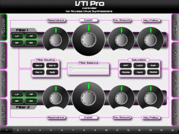

VTI Pro controls your Access Virus range synthesiser directly from your iPad.
Using Coremidi networking technology, VTI Pro seamlessly connects to your Access Virus Synthesiser via your DAW using Wifi and offers full control to nearly all of the available control parameters.VTI Pro is built for use with the Virus TI / TI2 Range, but will work for all Access Virus synthesisers (A, B, Classic and C)
*some parameters only work exclusively with TI models.*** Features ***
<< Integrated User Interface >>
Quick ‘n’ slick access to Filters, Oscillators, Envelopes, LFO’s, FX and more. Ultra responsive UI Design for maximum workflow.
<< XYZ Pad >>
Select the parameter you wish to assign and touch and move the device to control your Access Virus. Now you can drive your Virus like a Ferrari.
<< 12 Soft Knobs >>
Assign any parameter to one of 12 easy access soft knobs, just like on your Virus synthesiser.
<< MultiChannel Control >>
Simply select the channel you wish to control using the control bar at the bottom.
<< Hardcoded Parameters >>
Unlike other midi control apps, VTI Pro has been specifically designed for Access Virus Synthesisers and has all the accessible parameters hardcoded , including some hard to access Sysex controls.
For more details, drop by here – http://www.iximix.com
Grab VTI Pro now –